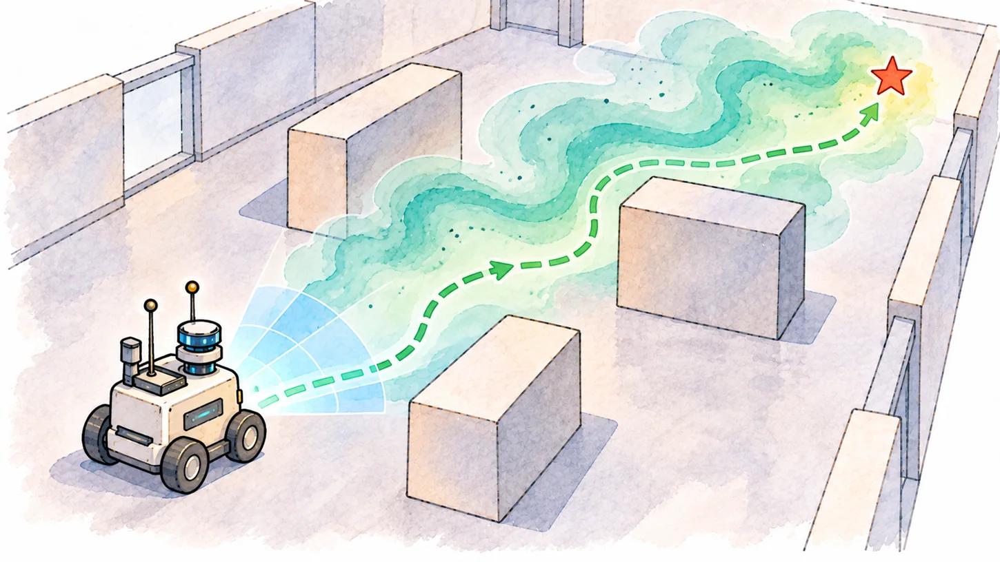

EPFL DISAL · PhD Research
Gas Source Localization
Developed and validated an end-to-end mobile robotic olfaction system, combining gas and wind sensing, physics-informed environmental modeling, probabilistic source estimation, and informative exploration. Tested algorithms on physical mobile robots under challenging airflow and sensing conditions, including multi-robot experiments.
Probabilistic estimation · Active perception · Multi-robot systems · Physical experiments